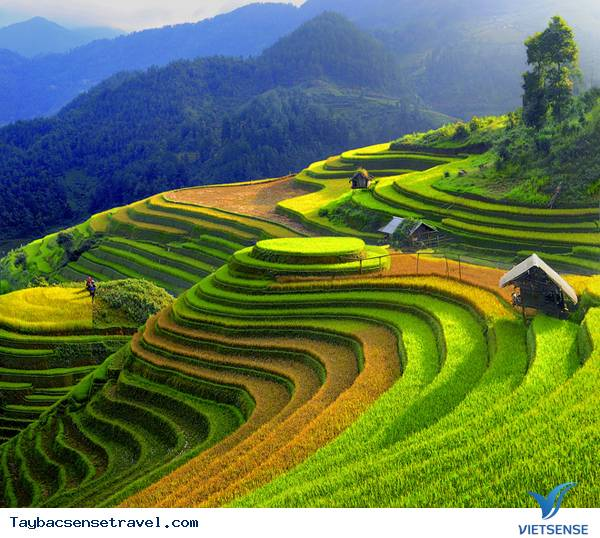

Vùng Tây Bắc Việt Nam là một địa điểm du lịch hấp dẫn với phong cảnh thiên nhiên tuyệt đẹp và văn hóa đa dạng. Hãy đến và khám phá những kỳ quan thiên nhiên, những ngôi làng truyền thống và những bản sắc văn hóa độc đáo.
Tây Bắc là một trong những địa điểm du lịch sở hữu cảnh sắc mỹ lệ, hoang sơ nhưng vô cùng quyến rũ. Nơi đây đã thu hút không ít khách du lịch lui tới hàng năm. Khi đến đây, du khách sẽ có cơ hội được tận hưởng những cảnh đẹp của núi rừng Tây Bắc với thửa ruộng bậc thang, khúc đèo quanh co, hiểm trở, tận hưởng cuộc sống vui tươi của người dân nơi đây.
Tây Bắc được xem là đường biên giới giữa 2 nước Trung Quốc và Lào. Đây là một trong những khu vực được biết đến với nền không gian văn hoá với điệu múa xòe hoa được nhiều khách du lịch biết đến. Không chỉ vậy, nơi đây còn đa dạng bản sắc văn hoá với hơn 20 dân tộc anh em cùng chung sống.
Nổi tiếng với phong cảnh thiên nhiên đẹp ngất ngây như tranh vẽ, bản làng yên bình cùng người dân mộc màng, chân chất đã làm say đắm nhiều du khách khi đến với mảnh đất này.
Ẩm thực vùng cao Tây Bắc luôn khơi gợi một niềm cảm hứng mãnh liệt cho mọi du khách bởi sự độc đáo của các đặc sản trứ danh. Từ nguyên liệu, cách chế biến đến hương vị của các món ăn vùng Tây Bắc đều không thể lẫn vào đâu được. Và sau đây là một số ẩm thực Tây Bắc:
Khi đến với chuyến hành trình du lịch Tây Bắc, du khách không thể bỏ qua những cảnh đẹp hùng vĩ cùng núi non bạt ngàn mà Tây Bắc sở hữu. Dưới đây chúng tôi sẽ tổng hợp một số địa điểm mà bạn không thể bỏ phí nhé!
Địa chỉ: Tràng An, Chương Mỹ, Hà Nội
Điện thoại: 0357681909
Email: trannnthanh05@gmail.com